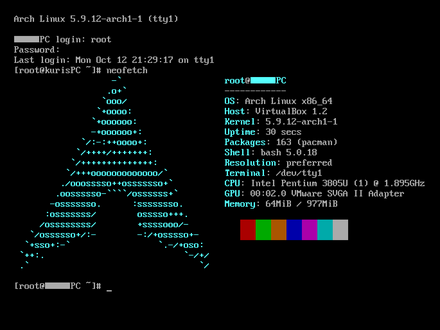

Light weight and simple distro
Arch is a light weight and simple "distribution" of flexible Linux® distribution and tries to Keep It Simple.
It is based on the quote ("Keep it simple, idiot!"). It is one of the most respected distrubution in the linux community.
It is based on x86 and x64 architecture and supports both x86 and x64 based cpus. The project attempts to have minimal
change and bloat ware in the operating system. Unlike windows which provides a gui, window manager, and microsft apps
out of the box. Arch just provides a basic screen with a bash command line and encourages the users to install and add more
to it and make this os "theirs". Arch is open source and its code is readily provided in the internet for anyone to poke around
and change according to their will.
|

|
Origins
Inspired by CRUX, another minimalist distribution, Judd Vinet started the Arch Linux project in March 2002. The name was chosen because Vinet liked the word's meaning of "the principal," as in "arch-enemy". Originally only for 32-bit x86 CPUs, the first x86_64 installation ISO was released in April 2006.
|
|
Current
Since its creation the Arch project has gained alot of popularity due to its hard to install and configuration nature, It has also given birth to a inside joke "I use arch btw" showing that the person uses Arch and used to showoff in different medias from comment sections to videos. As it is very hard to install people in the community respect the os and its users. Arch has also spawned alot of "distros" which uses the source code of arch but comes with their own special programs and sofwares.

|
Links
Official website:
Click here For the official arch linux website
Official github page:
Click here for the source code of arch linux
|